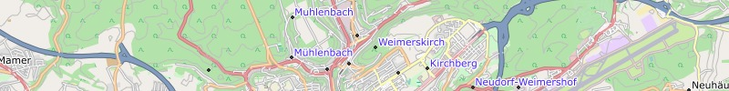
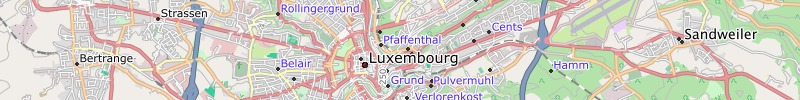
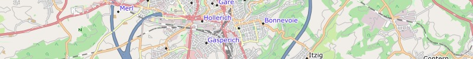
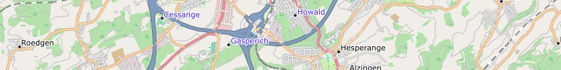

Garmin GPS-device: Luxembourg - install image for micro SD card (0.02 GB)
Download
Microsoft Windows: Luxembourg - archive for Garmin BaseCamp (0.02 GB)
Download
Apple Mac OS X: Luxembourg - install archive for Garmin BaseCamp (0.02 GB)
Download
All operating systems: Luxembourg - image folder for QLandkarte (0.02 GB)
DownloadWe wish you lots of fun with the Freizeitkarte maps ... and many interesting trips.